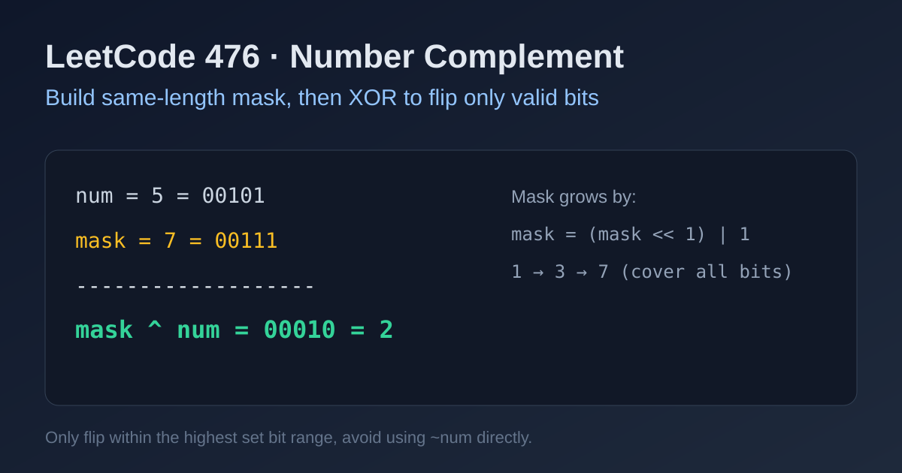

LeetCode 476: Number Complement (Bitmask + XOR Flip)
LeetCode 476Bit ManipulationBitmaskXORToday we solve LeetCode 476 - Number Complement.
Source: https://leetcode.com/problems/number-complement/

English
Problem Summary
Given a positive integer num, flip every bit in its binary representation and return the resulting value.
Key Insight
We should only flip bits within num's effective bit-length. Build a mask like 111...111 (same length as num), then compute mask ^ num.
Algorithm
1) Initialize mask = 1.
2) Left-expand mask until mask >= num by mask = (mask << 1) | 1.
3) Return mask ^ num.
Complexity Analysis
Time: O(log num) (number of bits).
Space: O(1).
Common Pitfalls
- Using ~num directly, which flips all higher bits too.
- Forgetting that input is positive, so mask must be built from 1 upward.
- Stopping mask expansion too early (must fully cover highest set bit).
Reference Implementations (Java / Go / C++ / Python / JavaScript)
class Solution {
public int findComplement(int num) {
int mask = 1;
while (mask < num) {
mask = (mask << 1) | 1;
}
return mask ^ num;
}
}func findComplement(num int) int {
mask := 1
for mask < num {
mask = (mask << 1) | 1
}
return mask ^ num
}class Solution {
public:
int findComplement(int num) {
int mask = 1;
while (mask < num) {
mask = (mask << 1) | 1;
}
return mask ^ num;
}
};class Solution:
def findComplement(self, num: int) -> int:
mask = 1
while mask < num:
mask = (mask << 1) | 1
return mask ^ numvar findComplement = function(num) {
let mask = 1;
while (mask < num) {
mask = (mask << 1) | 1;
}
return mask ^ num;
};中文
题目概述
给你一个正整数 num，把它二进制表示中的每一位都取反，返回取反后的十进制结果。
核心思路
不能直接用 ~num，因为那会把更高位也翻转。应先构造与 num 位数相同的全 1 掩码（例如 11111），再做 mask ^ num。
算法步骤
1）初始化 mask = 1。
2）当 mask < num 时循环扩展：mask = (mask << 1) | 1。
3）返回 mask ^ num。
复杂度分析
时间复杂度：O(log num)（按位数计算）。
空间复杂度：O(1)。
常见陷阱
- 直接使用 ~num 导致符号位和高位干扰。
- 掩码长度不够，没有覆盖最高有效位。
- 忘记题目输入是正整数，边界处理不清晰。
多语言参考实现（Java / Go / C++ / Python / JavaScript）
class Solution {
public int findComplement(int num) {
int mask = 1;
while (mask < num) {
mask = (mask << 1) | 1;
}
return mask ^ num;
}
}func findComplement(num int) int {
mask := 1
for mask < num {
mask = (mask << 1) | 1
}
return mask ^ num
}class Solution {
public:
int findComplement(int num) {
int mask = 1;
while (mask < num) {
mask = (mask << 1) | 1;
}
return mask ^ num;
}
};class Solution:
def findComplement(self, num: int) -> int:
mask = 1
while mask < num:
mask = (mask << 1) | 1
return mask ^ numvar findComplement = function(num) {
let mask = 1;
while (mask < num) {
mask = (mask << 1) | 1;
}
return mask ^ num;
};
Comments